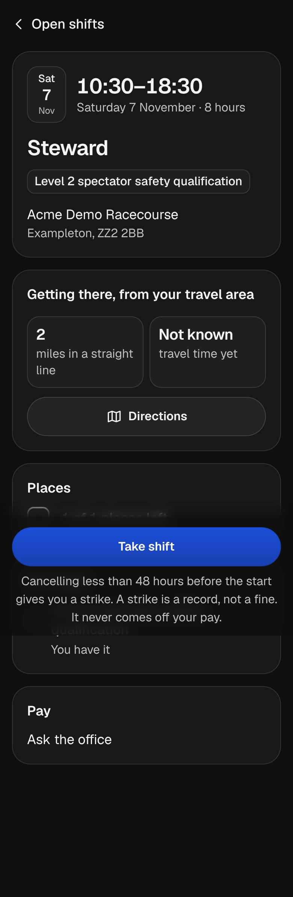

<title>A Shift's Page</title>
<meta name="claude:viewport-fit-sides" content="cover">
<link rel="preconnect" href="https://fonts.googleapis.com">
<link rel="preconnect" href="https://fonts.gstatic.com" crossorigin>
<link rel="stylesheet" href="https://fonts.googleapis.com/css2?family=Geist:wght@400;500;600;700&family=Geist+Mono:wght@500&display=swap">
<style>
/* Layout: a review sheet for task 28.5 (a shift's page, /shifts/[id]). Each row pairs "Before" (the
   build at the wave's base, 569c60c: 28.1's look, the page's own parts untouched) with "After 28.5"
   (the merged build) at their real sizes: phones at 390px, and Dylan's laptop at 1,280px and 150%
   (an 853px window, the app's 448px column in the middle). The first frame of row 1 is the review's
   own screenshot from before Phase 28 (a copy of ../before/staff-open-shift-dark-phone.jpg). The
   sheet's chrome follows the viewer's theme; each frame
   carries its own fixed theme, as the app does. Values are the app's tokens (src/app/globals.css)
   and shared classes (src/app/ui/classes.ts); words are the build's (src/lib/portal/
   shift-page-copy.ts, sign-copy.ts, src/lib/travel/line-copy.ts, src/lib/rules/reasons.ts). */
:root {
  --sheet-bg: #ecebe7;
  --sheet-fg: #1b1c1e;
  --sheet-muted: #5a5d63;
  --sheet-rule: rgb(27 28 30 / 0.12);
  --sheet-mark: #1d4ed8;
  --sheet-mark-soft: rgb(29 78 216 / 0.1);
  --font-ui: "Geist", ui-sans-serif, system-ui, -apple-system, "Segoe UI", sans-serif;
  --font-data: "Geist Mono", ui-monospace, "SF Mono", Menlo, monospace;
}
@media (prefers-color-scheme: dark) {
  :root:not([data-theme="light"]) {
    --sheet-bg: #161618;
    --sheet-fg: #ededec;
    --sheet-muted: #a9a9ae;
    --sheet-rule: rgb(255 255 255 / 0.12);
    --sheet-mark: #a1bdff;
    --sheet-mark-soft: rgb(161 189 255 / 0.12);
    color-scheme: dark;
  }
}
:root[data-theme="dark"] {
  --sheet-bg: #161618;
  --sheet-fg: #ededec;
  --sheet-muted: #a9a9ae;
  --sheet-rule: rgb(255 255 255 / 0.12);
  --sheet-mark: #a1bdff;
  --sheet-mark-soft: rgb(161 189 255 / 0.12);
  color-scheme: dark;
}

/* The casual app's tokens, per frame (light, then .dark). Acme Events' colour is #1d4ed8: its main
   button keeps it, with white words, in both looks; its mark is a little lighter in dark. */
.app {
  --canvas: #f2f2f0;
  --ink: #17181a;
  --muted: #55585f;
  --card: rgb(255 255 255 / 0.55);
  --rim: rgb(16 24 40 / 0.1);
  --tile: rgb(16 24 40 / 0.03);
  --button: rgb(255 255 255 / 0.7);
  --button-rim: rgb(16 24 40 / 0.14);
  --firm: #1d4ed8;
  --on-firm: #ffffff;
  --firm-mark: #1d4ed8;
  --urgent: #b0201f;
  --urgent-soft: rgb(255 239 234 / 0.85);
  --urgent-line: #f5c2bb;
  --urgent-ink: #7d1a10;
  --urgent-tile: rgb(255 216 207 / 0.9);
  --urgent-fill: #c4242a;
  --att-soft: rgb(255 246 224 / 0.85);
  --att-line: #f0d39a;
  --att-ink: #5c3f00;
  --hivis: rgb(251 229 160 / 0.8);
  --on-hivis: #5c3f00;
  --done-soft: rgb(233 246 238 / 0.85);
  --done-line: #b4dfc3;
  --done-ink: #155230;
  --done-tile: rgb(210 239 219 / 0.9);
  --quiet-soft: rgb(16 24 40 / 0.05);
  --quiet-line: #d6d8dc;
  color-scheme: light;
}
.app.dark {
  --canvas: #0f0f10;
  --ink: #f4f4f3;
  --muted: #bfbfc4;
  --card: rgb(255 255 255 / 0.04);
  --rim: rgb(255 255 255 / 0.12);
  --tile: rgb(255 255 255 / 0.03);
  --button: rgb(255 255 255 / 0.05);
  --button-rim: rgb(255 255 255 / 0.14);
  --firm-mark: #3b6cf0;
  --urgent: #ffa299;
  --urgent-soft: rgb(58 26 25 / 0.8);
  --urgent-line: #6a2a28;
  --urgent-ink: #ffc4bc;
  --urgent-tile: rgb(58 26 25 / 0.9);
  --urgent-fill: #d13438;
  --att-soft: rgb(51 38 15 / 0.8);
  --att-line: #5a4318;
  --att-ink: #f6dcb0;
  --hivis: rgb(58 47 16 / 0.8);
  --on-hivis: #fbe3a0;
  --done-soft: rgb(21 41 26 / 0.8);
  --done-line: #2b5a3e;
  --done-ink: #c2efc0;
  --done-tile: rgb(21 41 26 / 0.9);
  --quiet-soft: rgb(255 255 255 / 0.06);
  --quiet-line: #38383c;
  color-scheme: dark;
}

* { box-sizing: border-box; }
body {
  margin: 0;
  background: var(--sheet-bg);
  color: var(--sheet-fg);
  font-family: var(--font-ui);
  font-size: 15px;
  line-height: 1.5;
}
.sheet {
  max-width: 1760px;
  margin: 0 auto;
  padding-block: 32px 64px;
  padding-left: max(16px, env(safe-area-inset-left, 0px));
  padding-right: max(16px, env(safe-area-inset-right, 0px));
  display: grid;
  gap: 48px;
}
header.top { display: grid; gap: 12px; max-width: 80ch; }
header.top h1 { font-size: 30px; font-weight: 600; letter-spacing: -0.01em; margin: 0; text-wrap: balance; }
header.top p { margin: 0; color: var(--sheet-muted); }
.tagline { font-family: var(--font-data); font-size: 12px; letter-spacing: 0.06em; text-transform: uppercase; color: var(--sheet-mark); }
section.row { display: grid; gap: 16px; min-width: 0; }
section.row > h2 { font-size: 20px; font-weight: 600; margin: 0; text-wrap: balance; }
section.row > p { margin: 0; color: var(--sheet-muted); max-width: 84ch; }
.changes { margin: 0; padding-left: 20px; display: grid; gap: 4px; max-width: 92ch; }
.changes li::marker { color: var(--sheet-mark); }
.scroller { overflow-x: auto; padding: 4px 4px 8px; }
.frames { display: flex; gap: 20px; align-items: flex-start; width: max-content; }
.frame { display: grid; gap: 8px; margin: 0; }
.frame figcaption { font-family: var(--font-data); font-size: 12px; color: var(--sheet-muted); display: flex; gap: 8px; align-items: center; }
.pill { display: inline-flex; align-items: center; border-radius: 999px; padding: 2px 8px; font-weight: 500; border: 1px solid var(--sheet-rule); }
.pill.after { color: var(--sheet-mark); background: var(--sheet-mark-soft); border-color: transparent; }
.divider { width: 1px; align-self: stretch; background: var(--sheet-rule); }
.mono { font-family: var(--font-data); font-size: 13px; }
.note { font-size: 13px; color: var(--sheet-muted); max-width: 84ch; margin: 0; }
.shot { display: block; width: 390px; height: auto; border-radius: 28px; box-shadow: 0 0 0 1px var(--sheet-rule), 0 12px 32px rgb(0 0 0 / 0.12); }

/* A casual's phone at its real 390px; the laptop frame is the 853px window, the app's column
   (448px) in the middle. A shift's page has its own bar and no tab bar. */
.app {
  width: 390px;
  border-radius: 28px;
  background: var(--canvas);
  color: var(--ink);
  box-shadow: 0 0 0 1px var(--sheet-rule), 0 12px 32px rgb(0 0 0 / 0.12);
  overflow: hidden;
  font-family: var(--font-ui);
  font-size: 16px;
  line-height: 1.5;
}
.app.laptop { width: 853px; border-radius: 12px; }
.app p { margin: 0; }
.page { max-width: 448px; margin: 0 auto; padding: 0 16px 20px; }
.app.laptop .page { padding-inline: 24px; }
.own { display: flex; align-items: center; justify-content: space-between; gap: 12px; padding-top: 4px; margin-bottom: 8px; }
.back { display: inline-flex; flex: none; align-items: center; gap: 6px; min-height: 56px; margin-left: -8px; padding: 0 12px 0 6px; font-size: 18px; line-height: 26px; font-weight: 500; }
.firm { display: flex; align-items: center; gap: 8px; min-width: 0; }
.firm .m { width: 32px; height: 32px; flex: none; border-radius: 8px; background: var(--firm-mark); color: #fff; display: grid; place-items: center; font-size: 14px; font-weight: 700; }
.firm .n { font-weight: 600; white-space: nowrap; overflow: hidden; text-overflow: ellipsis; }
svg.i { width: 22px; height: 22px; flex: none; fill: none; stroke: currentColor; stroke-width: 2; stroke-linecap: round; stroke-linejoin: round; }
svg.t { width: 16px; height: 16px; flex: none; fill: none; stroke: currentColor; stroke-width: 2.5; stroke-linecap: round; stroke-linejoin: round; }
.stack { display: flex; flex-direction: column; gap: 16px; }

/* Cards: 12px round, 16px inside since 28.5 (before: 24px round, 20px inside). */
.card { background: var(--card); box-shadow: inset 0 0 0 1px var(--rim); border-radius: 12px; padding: 16px; display: flex; flex-direction: column; gap: 12px; }
.card.old { border-radius: 24px; padding: 20px; }
.card.head { padding: 0; overflow: hidden; gap: 0; }
.card.head .in { padding: 16px; display: flex; flex-direction: column; gap: 16px; }
.card.head.old .in { padding: 20px; }
.card h2 { font-size: 18px; line-height: 26px; font-weight: 600; margin: 0; }
.band { display: flex; align-items: center; gap: 10px; background: var(--urgent-fill); color: #fff; padding: 12px 20px; font-size: 18px; font-weight: 500; }
.band::before { content: ""; width: 10px; height: 10px; border-radius: 999px; background: currentColor; }
.when { display: flex; align-items: center; gap: 14px; }
.tile { width: 52px; flex: none; align-self: flex-start; border-radius: 8px; padding: 6px 0 8px; text-align: center; background: var(--button); box-shadow: inset 0 0 0 1px var(--button-rim); }
.tile span { display: block; }
.tile .dw { font-size: 14px; font-weight: 500; }
.tile .d { font-size: 24px; line-height: 1.25; font-weight: 600; letter-spacing: -0.02em; font-variant-numeric: tabular-nums; }
.tile .mo { font-size: 12px; color: var(--muted); }
.tile.urgent { background: var(--urgent-tile); color: var(--urgent-ink); box-shadow: inset 0 0 0 1px var(--rim); }
.tile.urgent .mo { color: var(--urgent-ink); }
.range { font-size: 28px; line-height: 34px; font-weight: 600; letter-spacing: -0.02em; font-variant-numeric: tabular-nums; white-space: nowrap; }
.muted { color: var(--muted); }
h1.role { font-size: 28px; line-height: 34px; font-weight: 600; letter-spacing: -0.02em; margin: 0; }
.chips { display: flex; flex-wrap: wrap; gap: 8px; margin-top: -4px; }
.oldchip { background: var(--tile); box-shadow: inset 0 0 0 1px var(--rim); border-radius: 10px; padding: 4px 10px; font-weight: 500; }
.where { display: flex; align-items: flex-start; justify-content: space-between; gap: 12px; }
.where .n { font-size: 18px; line-height: 1.375; }
.plate { flex: none; border-radius: 8px; padding: 6px 12px; font-size: 18px; font-weight: 500; background: var(--button); box-shadow: inset 0 0 0 1px var(--button-rim); }
.plate.old { border-radius: 10px; background: var(--tile); box-shadow: inset 0 0 0 1px var(--rim); }

/* 28.1's slip: a status's pale tint, a 1px edge, 8px round, led by its round icon disc. */
.slip { display: flex; align-items: flex-start; gap: 12px; border: 1px solid; border-radius: 8px; padding: 12px 16px; }
.slip > div { align-self: center; display: flex; flex-direction: column; gap: 4px; min-width: 0; flex: 1; }
.slip b { font-weight: 600; }
.slip.urgent { border-color: var(--urgent-line); background: var(--urgent-soft); }
.slip.att { border-color: var(--att-line); background: var(--att-soft); }
.slip.done { border-color: var(--done-line); background: var(--done-soft); }
.slip.quiet { border-color: var(--quiet-line); background: var(--quiet-soft); }
.disc { width: 32px; height: 32px; flex: none; border-radius: 999px; display: grid; place-items: center; }
.disc.urgent { background: var(--urgent-tile); color: var(--urgent-ink); }
.disc.att { background: var(--hivis); color: var(--on-hivis); }
.disc.done { background: var(--done-tile); color: var(--done-ink); }
.disc.quiet { background: var(--button); box-shadow: inset 0 0 0 1px var(--button-rim); color: var(--muted); }

.figs { display: grid; grid-template-columns: 1fr 1fr; gap: 8px; margin-top: 4px; }
.fig { background: var(--tile); box-shadow: inset 0 0 0 1px var(--rim); border-radius: 16px; padding: 12px; }
.fig .f { font-size: 24px; line-height: 1.25; font-weight: 600; letter-spacing: -0.02em; }
.fig .w { color: var(--muted); line-height: 1.375; }
.line { font-size: 18px; line-height: 26px; }
.btn1, .btn2 { display: flex; width: 100%; min-height: 52px; align-items: center; justify-content: center; gap: 8px; border-radius: 999px; padding: 12px 20px; font-weight: 600; text-align: center; }
.btn1 { background: var(--firm); color: var(--on-firm); box-shadow: inset 0 0 0 1px rgb(0 0 0 / 0.08); }
.btn2 { background: var(--button); box-shadow: inset 0 0 0 1px var(--button-rim); }
.pair { display: grid; grid-template-columns: 1fr 1fr; gap: 10px; margin-top: 12px; }
.pair span { display: flex; min-height: 52px; align-items: center; justify-content: center; border-radius: 999px; padding: 8px 12px; font-weight: 600; background: var(--button); box-shadow: inset 0 0 0 1px var(--button-rim); }
.links { display: flex; flex-direction: column; gap: 10px; }
.seats { display: flex; flex-wrap: wrap; align-items: center; gap: 16px; }
.seats .s { display: flex; gap: 8px; }
.seat { width: 30px; height: 30px; border-radius: 999px; border: 2px solid var(--muted); }
.seat.u { border-color: var(--urgent); }
.seat.t { background: var(--ink); border-color: var(--ink); }
.oldplaces { font-size: 18px; font-weight: 500; }
.tag { display: inline-flex; min-height: 28px; align-items: center; gap: 4px; border-radius: 999px; padding: 4px 12px; font-size: 14px; line-height: 20px; font-weight: 500; background: var(--button); box-shadow: inset 0 0 0 1px var(--button-rim); }
.tag.urgent { background: var(--urgent-soft); color: var(--urgent-ink); font-weight: 600; box-shadow: inset 0 0 0 1px var(--rim); }
.chipdone { display: inline-flex; min-height: 28px; align-items: center; gap: 4px; border-radius: 999px; padding: 4px 12px; font-size: 14px; line-height: 20px; font-weight: 600; background: var(--done-soft); color: var(--done-ink); box-shadow: inset 0 0 0 1px var(--rim); }
.needs { list-style: none; margin: 0; padding: 0; display: flex; flex-direction: column; gap: 10px; }
.needs li { display: flex; flex-direction: column; gap: 2px; }
.needs .nm { display: flex; align-items: center; gap: 8px; font-size: 18px; line-height: 26px; font-weight: 500; }
.mk { width: 24px; height: 24px; flex: none; border-radius: 999px; display: grid; place-items: center; }
.mk.done { background: var(--done-tile); color: var(--done-ink); }
.mk.urgent { background: var(--urgent-tile); color: var(--urgent-ink); }
.needs .st { padding-left: 32px; }
.st.done { color: var(--muted); }
.st.urgent { color: var(--urgent-ink); font-weight: 600; }
.u { text-decoration: underline; text-underline-offset: 4px; font-weight: 600; }
.u.tall { display: inline-flex; min-height: 44px; align-items: center; vertical-align: middle; }
.u.ink { color: var(--ink); }
.foot { margin-top: 20px; padding-top: 12px; }
.foot .sn { margin-top: 8px; text-align: center; color: var(--muted); }
.why { margin-top: 24px; border-radius: 12px; background: var(--urgent-soft); color: var(--urgent-ink); padding: 16px; }
.why.new8 { border-radius: 8px; border: 1px solid var(--urgent-line); }
.why h2 { display: flex; align-items: center; gap: 8px; font-size: 18px; line-height: 26px; font-weight: 600; margin: 0; }
.why ul { margin: 8px 0 0; padding-left: 20px; }
.why .btn2 { margin-top: 12px; color: var(--ink); }
.review { margin-top: 24px; display: grid; gap: 16px; }
.review label { display: grid; gap: 4px; font-weight: 600; }
.review .box { min-height: 104px; border-radius: 8px; background: var(--tile); box-shadow: inset 0 0 0 1px var(--rim); }
.oldans { display: flex; align-items: flex-start; gap: 10px; border-radius: 12px; padding: 14px; background: var(--urgent-soft); }
.oldans .sq { width: 26px; height: 26px; flex: none; border-radius: 5px; background: var(--urgent-fill); color: #fff; display: grid; place-items: center; }
.oldans.quiet { display: block; }
.answers { display: grid; gap: 16px; padding: 24px 16px; }

/* What 28.5 adds or changes: a dashed outline in the sheet's own blue. */
.new { outline: 2px dashed var(--sheet-mark); outline-offset: 3px; }

@media (prefers-reduced-motion: reduce) { * { scroll-behavior: auto; } }
@media (max-width: 520px) { header.top h1 { font-size: 24px; } }
</style>

<svg width="0" height="0" style="position:absolute" aria-hidden="true">
  <defs>
    <symbol id="i-back" viewBox="0 0 24 24"><path d="m15 5-7 7 7 7"/></symbol>
    <symbol id="i-map" viewBox="0 0 24 24"><path d="M9 4 3 6.5v13.5l6-2.5 6 2.5 6-2.5V4l-6 2.5L9 4Z"/><path d="M9 4v13.5"/><path d="M15 6.5V20"/></symbol>
    <symbol id="i-msg" viewBox="0 0 24 24"><path d="M4.5 5.5h15v10h-9l-6 4.5V5.5Z"/></symbol>
    <symbol id="i-clock" viewBox="0 0 24 24"><circle cx="12" cy="12" r="8.5"/><path d="M12 7.5V12l3 2"/></symbol>
    <symbol id="i-cal" viewBox="0 0 24 24"><rect x="4" y="5.5" width="16" height="14.5" rx="2"/><path d="M4 10h16"/><path d="M8.5 3.5v4"/><path d="M15.5 3.5v4"/></symbol>
    <symbol id="t-urgent" viewBox="0 0 24 24"><path d="M12 3.5 2.5 20h19L12 3.5Z"/><path d="M12 10v4"/><path d="M12 17h.01"/></symbol>
    <symbol id="t-att" viewBox="0 0 24 24"><circle cx="12" cy="12" r="8.5"/><path d="M12 7.5V12l3 2"/></symbol>
    <symbol id="t-done" viewBox="0 0 24 24"><path d="m5 12.5 4.5 4.5L19 7.5"/></symbol>
    <symbol id="t-quiet" viewBox="0 0 24 24"><path d="M6 12h12"/></symbol>
    <symbol id="t-x" viewBox="0 0 24 24"><path d="m6 6 12 12"/><path d="M18 6 6 18"/></symbol>
  </defs>
</svg>

<main class="sheet">
  <header class="top">
    <span class="tagline">ShiftDesk · Phase 28 · task 28.5</span>
    <h1>A shift's page, before and after</h1>
    <p>One shift's page in the casual app (<span class="mono">/shifts/[id]</span>): an open shift, an urgent one, one she can't take, and her own booking. Phones at their real 390px, light and dark; the laptop frames are 1,280px wide at 150% scaling (an 853px window). "Before" is the build at the wave's base (28.1's look, the page's own parts untouched); the first frame is the review's own screenshot from before Phase 28. Made-up firm and places: Acme Events, Acme Demo Racecourse and Acme Demo Arena. A dashed blue outline marks what 28.5 adds or changes.</p>
    <ul class="changes">
      <li>Every way to the office is a working link (the review's majors 1 and 2): "Ask the office about the pay" (Messages about this shift; once a booked shift has ended, "Raise a pay query" to payroll), "Message the office" beside a qualification only the office can sort and under a reason that sends her to the office, "Running late?" from 3 hours before the start, and "Message the office" once it has started.</li>
      <li>The office's parts: cards 12px round with 16px inside, the urgent slip in place of the solid red band, places on a tag ("The last place" for 1 of 1), the post on a plate of clear glass, the answers after "Take shift" and "I can do this" on slips.</li>
      <li>The firm's mark and name in the page's own bar, beside "‹ Open shifts", so a link from an offer shows whose shift it is.</li>
      <li>No chips of what it needs under the role: "You need" lists each with her status. Until the travel time is worked out, one sentence (the travel line's, 28.8's words) in place of figure tiles that read as values.</li>
      <li>Inside the firm's notice the strike note names the hours: "This shift starts in 37 hours. If you cancel it, you'll get a strike."</li>
      <li>On her booking: "Changed since you booked: …" (the briefing's parts in plain words, never a value or anyone else), "Add to my calendar" (an .ics file with no pay, instructions or other people) and, when the office moved it, "The times changed. Add it to your calendar again."</li>
    </ul>
  </header>

  <!-- 1. An open shift -->
  <section class="row" aria-labelledby="r1">
    <h2 id="r1">An open shift</h2>
    <p>The review's demo shift: Steward at Acme Demo Racecourse, Sat 7 Nov, 10:30 to 18:30, one place of one, no rate set, and her travel time not worked out yet (only the straight line). Seen on Thu 5 Nov at 21:30, so it starts inside the firm's 48 hours. "Take shift" floats at the foot of the screen; at the end of the page it rests in its place, as drawn here.</p>
    <div class="scroller">
      <div class="frames">
        <figure class="frame">
          <figcaption><span class="pill">Before Phase 28</span> 390px · dark · the review's screenshot</figcaption>
          
        </figure>
        <figure class="frame">
          <figcaption><span class="pill">Before 28.5</span> 390px · light · 28.1's look</figcaption>
          <div class="app">
            <div class="page">
              <div class="own"><span class="back"><svg class="i"><use href="#i-back"/></svg>Open shifts</span></div>
              <div class="stack">
                <section class="card head old"><div class="in">
                  <div class="when"><span class="tile"><span class="dw">Sat</span><span class="d">7</span><span class="mo">Nov</span></span><div><p class="range">10:30–18:30</p><p class="muted">Saturday 7 November · 8 hours</p></div></div>
                  <h1 class="role">Steward</h1>
                  <p class="chips"><span class="oldchip">Level 2 spectator safety qualification</span></p>
                  <div class="where"><div><p class="n">Acme Demo Racecourse</p><p class="muted">Exampleton, ZZ2 2BB</p></div></div>
                </div></section>
                <section class="card old"><h2>Getting there, from your travel area</h2>
                  <div class="figs"><div class="fig"><p class="f">2</p><p class="w">miles in a straight line</p></div><div class="fig"><p class="f">Not known</p><p class="w">travel time yet</p></div></div>
                  <span class="btn2"><svg class="i"><use href="#i-map"/></svg>Directions</span>
                </section>
                <section class="card old"><h2>Places</h2><p class="seats"><span class="s"><span class="seat"></span></span><span class="oldplaces">1 of 1 places left</span></p></section>
                <section class="card old"><h2>You need</h2><ul class="needs"><li><span class="nm"><span class="mk done"><svg class="t"><use href="#t-done"/></svg></span>Level 2 spectator safety qualification</span><span class="st done">You have it</span></li></ul></section>
                <section class="card old"><h2>Pay</h2><p class="line">Ask the office</p></section>
              </div>
              <div class="foot"><span class="btn1">Take shift</span><p class="sn">Cancelling less than 48 hours before the start gives you a strike. A strike is a record, not a fine. It never comes off your pay.</p></div>
            </div>
          </div>
        </figure>
        <span class="divider" aria-hidden="true"></span>
        <figure class="frame">
          <figcaption><span class="pill after">After 28.5</span> 390px · light</figcaption>
          <div class="app">
            <div class="page">
              <div class="own"><span class="back"><svg class="i"><use href="#i-back"/></svg>Open shifts</span><span class="firm new"><span class="m">A</span><span class="n">Acme Events</span></span></div>
              <div class="stack">
                <section class="card head new"><div class="in">
                  <div class="when"><span class="tile"><span class="dw">Sat</span><span class="d">7</span><span class="mo">Nov</span></span><div><p class="range">10:30–18:30</p><p class="muted">Saturday 7 November · 8 hours</p></div></div>
                  <h1 class="role">Steward</h1>
                  <div class="where"><div><p class="n">Acme Demo Racecourse</p><p class="muted">Exampleton, ZZ2 2BB</p></div></div>
                </div></section>
                <section class="card"><h2>Getting there, from your travel area</h2>
                  <p class="line new">About 2 miles away. Travel time isn't worked out yet.</p>
                  <span class="btn2"><svg class="i"><use href="#i-map"/></svg>Directions</span>
                </section>
                <section class="card"><h2>Places</h2><p class="seats"><span class="s"><span class="seat"></span></span><span class="tag new">The last place</span></p></section>
                <section class="card"><h2>You need</h2><ul class="needs"><li><span class="nm"><span class="mk done"><svg class="t"><use href="#t-done"/></svg></span>Level 2 spectator safety qualification</span><span class="st done">You have it</span></li></ul></section>
                <section class="card"><h2>Pay</h2><p class="line new">Not given yet.</p><span class="btn2 new"><svg class="i"><use href="#i-msg"/></svg>Ask the office about the pay</span></section>
              </div>
              <div class="foot"><span class="btn1">Take shift</span><p class="sn new">This shift starts in 37 hours. If you cancel it, you'll get a strike.</p></div>
            </div>
          </div>
        </figure>
        <figure class="frame">
          <figcaption><span class="pill after">After 28.5</span> 390px · dark</figcaption>
          <div class="app dark">
            <div class="page">
              <div class="own"><span class="back"><svg class="i"><use href="#i-back"/></svg>Open shifts</span><span class="firm"><span class="m">A</span><span class="n">Acme Events</span></span></div>
              <div class="stack">
                <section class="card head"><div class="in">
                  <div class="when"><span class="tile"><span class="dw">Sat</span><span class="d">7</span><span class="mo">Nov</span></span><div><p class="range">10:30–18:30</p><p class="muted">Saturday 7 November · 8 hours</p></div></div>
                  <h1 class="role">Steward</h1>
                  <div class="where"><div><p class="n">Acme Demo Racecourse</p><p class="muted">Exampleton, ZZ2 2BB</p></div></div>
                </div></section>
                <section class="card"><h2>Getting there, from your travel area</h2>
                  <p class="line">About 2 miles away. Travel time isn't worked out yet.</p>
                  <span class="btn2"><svg class="i"><use href="#i-map"/></svg>Directions</span>
                </section>
                <section class="card"><h2>Places</h2><p class="seats"><span class="s"><span class="seat"></span></span><span class="tag">The last place</span></p></section>
                <section class="card"><h2>You need</h2><ul class="needs"><li><span class="nm"><span class="mk done"><svg class="t"><use href="#t-done"/></svg></span>Level 2 spectator safety qualification</span><span class="st done">You have it</span></li></ul></section>
                <section class="card"><h2>Pay</h2><p class="line">Not given yet.</p><span class="btn2"><svg class="i"><use href="#i-msg"/></svg>Ask the office about the pay</span></section>
              </div>
              <div class="foot"><span class="btn1">Take shift</span><p class="sn">This shift starts in 37 hours. If you cancel it, you'll get a strike.</p></div>
            </div>
          </div>
        </figure>
        <figure class="frame">
          <figcaption><span class="pill after">After 28.5</span> laptop · 1,280px at 150% · light</figcaption>
          <div class="app laptop">
            <div class="page">
              <div class="own"><span class="back"><svg class="i"><use href="#i-back"/></svg>Open shifts</span><span class="firm"><span class="m">A</span><span class="n">Acme Events</span></span></div>
              <div class="stack">
                <section class="card head"><div class="in">
                  <div class="when"><span class="tile"><span class="dw">Sat</span><span class="d">7</span><span class="mo">Nov</span></span><div><p class="range">10:30–18:30</p><p class="muted">Saturday 7 November · 8 hours</p></div></div>
                  <h1 class="role">Steward</h1>
                  <div class="where"><div><p class="n">Acme Demo Racecourse</p><p class="muted">Exampleton, ZZ2 2BB</p></div></div>
                </div></section>
                <section class="card"><h2>Getting there, from your travel area</h2>
                  <p class="line">About 2 miles away. Travel time isn't worked out yet.</p>
                  <span class="btn2"><svg class="i"><use href="#i-map"/></svg>Directions</span>
                </section>
                <section class="card"><h2>Places</h2><p class="seats"><span class="s"><span class="seat"></span></span><span class="tag">The last place</span></p></section>
                <section class="card"><h2>You need</h2><ul class="needs"><li><span class="nm"><span class="mk done"><svg class="t"><use href="#t-done"/></svg></span>Level 2 spectator safety qualification</span><span class="st done">You have it</span></li></ul></section>
                <section class="card"><h2>Pay</h2><p class="line">Not given yet.</p><span class="btn2"><svg class="i"><use href="#i-msg"/></svg>Ask the office about the pay</span></section>
              </div>
              <div class="foot"><span class="btn1">Take shift</span><p class="sn">This shift starts in 37 hours. If you cancel it, you'll get a strike.</p></div>
            </div>
          </div>
        </figure>
      </div>
    </div>
    <p class="note">"Ask the office about the pay" opens Messages about this shift (<span class="mono">/messages?shift={id}&amp;about=pay</span>), where 28.6 names the shift above the box. Further off than the firm's notice, the note stays as before ("Cancelling less than 48 hours before the start gives you a strike. …"); with strikes off, there's no note. Once the travel time is worked out, the three figures come back (miles, by car, by public transport).</p>
  </section>

  <!-- 2. An urgent shift -->
  <section class="row" aria-labelledby="r2">
    <h2 id="r2">An urgent shift</h2>
    <p>Door supervisor at Acme Demo Arena, Gate A, 2 of 4 places left, needed tonight. Before, a solid red band opened the card and the licence it needs sat in a chip under the role; after, the office's urgent slip, the post on a plate, and the places' words on a pale red tag.</p>
    <div class="scroller">
      <div class="frames">
        <figure class="frame">
          <figcaption><span class="pill">Before 28.5</span> 390px · light</figcaption>
          <div class="app">
            <div class="page">
              <div class="own"><span class="back"><svg class="i"><use href="#i-back"/></svg>Open shifts</span></div>
              <div class="stack">
                <section class="card head old"><p class="band">Urgent, needed now</p><div class="in">
                  <div class="when"><span class="tile urgent"><span class="dw">Fri</span><span class="d">6</span><span class="mo">Nov</span></span><div><p class="range">18:00–23:00</p><p class="muted">Friday 6 November · 5 hours</p></div></div>
                  <h1 class="role">Door supervisor</h1>
                  <p class="chips"><span class="oldchip">SIA door supervisor licence</span></p>
                  <div class="where"><div><p class="n">Acme Demo Arena</p><p class="muted">Exampleton, ZZ1 1AA</p></div><span class="plate old">Gate A</span></div>
                </div></section>
                <section class="card old"><h2>Places</h2><p class="seats"><span class="s"><span class="seat t"></span><span class="seat t"></span><span class="seat u"></span><span class="seat u"></span></span><span class="oldplaces">2 of 4 places left</span></p></section>
              </div>
            </div>
          </div>
        </figure>
        <span class="divider" aria-hidden="true"></span>
        <figure class="frame">
          <figcaption><span class="pill after">After 28.5</span> 390px · light</figcaption>
          <div class="app">
            <div class="page">
              <div class="own"><span class="back"><svg class="i"><use href="#i-back"/></svg>Open shifts</span><span class="firm"><span class="m">A</span><span class="n">Acme Events</span></span></div>
              <div class="stack">
                <section class="card head"><div class="in">
                  <div class="slip urgent new"><span class="disc urgent"><svg class="t"><use href="#t-urgent"/></svg></span><div><p><b>Urgent, needed now</b></p></div></div>
                  <div class="when"><span class="tile urgent"><span class="dw">Fri</span><span class="d">6</span><span class="mo">Nov</span></span><div><p class="range">18:00–23:00</p><p class="muted">Friday 6 November · 5 hours</p></div></div>
                  <h1 class="role">Door supervisor</h1>
                  <div class="where"><div><p class="n">Acme Demo Arena</p><p class="muted">Exampleton, ZZ1 1AA</p></div><span class="plate new">Gate A</span></div>
                </div></section>
                <section class="card"><h2>Places</h2><p class="seats"><span class="s"><span class="seat t"></span><span class="seat t"></span><span class="seat u"></span><span class="seat u"></span></span><span class="tag urgent new">2 of 4 places left</span></p></section>
              </div>
            </div>
          </div>
        </figure>
        <figure class="frame">
          <figcaption><span class="pill after">After 28.5</span> 390px · dark</figcaption>
          <div class="app dark">
            <div class="page">
              <div class="own"><span class="back"><svg class="i"><use href="#i-back"/></svg>Open shifts</span><span class="firm"><span class="m">A</span><span class="n">Acme Events</span></span></div>
              <div class="stack">
                <section class="card head"><div class="in">
                  <div class="slip urgent"><span class="disc urgent"><svg class="t"><use href="#t-urgent"/></svg></span><div><p><b>Urgent, needed now</b></p></div></div>
                  <div class="when"><span class="tile urgent"><span class="dw">Fri</span><span class="d">6</span><span class="mo">Nov</span></span><div><p class="range">18:00–23:00</p><p class="muted">Friday 6 November · 5 hours</p></div></div>
                  <h1 class="role">Door supervisor</h1>
                  <div class="where"><div><p class="n">Acme Demo Arena</p><p class="muted">Exampleton, ZZ1 1AA</p></div><span class="plate">Gate A</span></div>
                </div></section>
                <section class="card"><h2>Places</h2><p class="seats"><span class="s"><span class="seat t"></span><span class="seat t"></span><span class="seat u"></span><span class="seat u"></span></span><span class="tag urgent">2 of 4 places left</span></p></section>
              </div>
            </div>
          </div>
        </figure>
      </div>
    </div>
  </section>

  <!-- 3. One she can't take -->
  <section class="row" aria-labelledby="r3">
    <h2 id="r3">One she can't take</h2>
    <p>A door supervisor session at Acme Demo Arena on Mon 16 Nov that also asks for a Level 2 qualification, CSAS accreditation and a manual handling certificate. Her licence is fine; her Level 2 qualification runs out before the shift and she has no CSAS accreditation, neither of which she can send herself; the manual handling certificate she can upload (her other role needs it). Before, "ask the office." had no way to ask. The rules' reasons keep their words (the office reads the same ones).</p>
    <div class="scroller">
      <div class="frames">
        <figure class="frame">
          <figcaption><span class="pill">Before 28.5</span> 390px · light</figcaption>
          <div class="app">
            <div class="page">
              <div class="own"><span class="back"><svg class="i"><use href="#i-back"/></svg>Open shifts</span></div>
              <section class="card old"><h2>You need</h2><ul class="needs">
                <li><span class="nm"><span class="mk done"><svg class="t"><use href="#t-done"/></svg></span>SIA door supervisor licence</span><span class="st done">You have it, valid until 3 Mar 2027</span></li>
                <li><span class="nm"><span class="mk urgent"><svg class="t"><use href="#t-urgent"/></svg></span>Level 2 spectator safety qualification</span><span class="st urgent">Expires before this shift: ask the office.</span></li>
                <li><span class="nm"><span class="mk urgent"><svg class="t"><use href="#t-urgent"/></svg></span>CSAS accreditation</span><span class="st urgent">Missing: ask the office.</span></li>
                <li><span class="nm"><span class="mk urgent"><svg class="t"><use href="#t-urgent"/></svg></span>Manual handling certificate</span><span class="st urgent">Missing: <span class="u">upload it</span></span></li>
              </ul></section>
              <section class="why"><h2><svg class="i" style="width:20px;height:20px"><use href="#t-urgent"/></svg>You can't take this shift:</h2><ul>
                <li>Your Level 2 spectator safety qualification expires on 11 Nov, before this shift. Once you've renewed it, tell the office under Messages.</li>
                <li>This shift needs a valid CSAS accreditation. Once you have it, tell the office under Messages so they can check it.</li>
              </ul></section>
              <div class="review"><p>If you think this is wrong, ask the office to review it.</p><label>Anything the office should know? (optional)<span class="box"></span></label><span class="btn1">Ask the office to review</span></div>
            </div>
          </div>
        </figure>
        <span class="divider" aria-hidden="true"></span>
        <figure class="frame">
          <figcaption><span class="pill after">After 28.5</span> 390px · light</figcaption>
          <div class="app">
            <div class="page">
              <div class="own"><span class="back"><svg class="i"><use href="#i-back"/></svg>Open shifts</span><span class="firm"><span class="m">A</span><span class="n">Acme Events</span></span></div>
              <section class="card"><h2>You need</h2><ul class="needs">
                <li><span class="nm"><span class="mk done"><svg class="t"><use href="#t-done"/></svg></span>SIA door supervisor licence</span><span class="st done">You have it, valid until 3 Mar 2027</span></li>
                <li><span class="nm"><span class="mk urgent"><svg class="t"><use href="#t-urgent"/></svg></span>Level 2 spectator safety qualification</span><span class="st urgent">Expires before this shift. <span class="u tall ink new">Message the office</span></span></li>
                <li><span class="nm"><span class="mk urgent"><svg class="t"><use href="#t-urgent"/></svg></span>CSAS accreditation</span><span class="st urgent">Missing. <span class="u tall ink new">Message the office</span></span></li>
                <li><span class="nm"><span class="mk urgent"><svg class="t"><use href="#t-urgent"/></svg></span>Manual handling certificate</span><span class="st urgent">Missing: <span class="u tall">upload it</span></span></li>
              </ul></section>
              <section class="why new8 new"><h2><svg class="i" style="width:20px;height:20px"><use href="#t-urgent"/></svg>You can't take this shift:</h2><ul>
                <li>Your Level 2 spectator safety qualification expires on 11 Nov, before this shift. Once you've renewed it, tell the office under Messages.</li>
                <li>This shift needs a valid CSAS accreditation. Once you have it, tell the office under Messages so they can check it.</li>
              </ul></section>
              <div class="review"><p>If you think this is wrong, ask the office to review it.</p><label>Anything the office should know? (optional)<span class="box"></span></label><span class="btn1">Ask the office to review</span></div>
            </div>
          </div>
        </figure>
        <figure class="frame">
          <figcaption><span class="pill after">After 28.5</span> 390px · dark · a suspended licence</figcaption>
          <div class="app dark">
            <div class="page">
              <div class="own"><span class="back"><svg class="i"><use href="#i-back"/></svg>Open shifts</span><span class="firm"><span class="m">A</span><span class="n">Acme Events</span></span></div>
              <section class="card"><h2>You need</h2><ul class="needs">
                <li><span class="nm"><span class="mk urgent"><svg class="t"><use href="#t-urgent"/></svg></span>SIA door supervisor licence</span><span class="st urgent">Suspended. <span class="u tall ink new">Message the office</span></span></li>
              </ul></section>
              <section class="why new8"><h2><svg class="i" style="width:20px;height:20px"><use href="#t-urgent"/></svg>You can't take this shift:</h2><ul>
                <li>Your SIA door supervisor licence is suspended. Contact the office.</li>
              </ul><span class="btn2 new"><svg class="i"><use href="#i-msg"/></svg>Message the office</span></section>
              <div class="review"><p>If you think this is wrong, ask the office to review it.</p><label>Anything the office should know? (optional)<span class="box"></span></label><span class="btn1">Ask the office to review</span></div>
            </div>
          </div>
        </figure>
      </div>
    </div>
    <p class="note">Each "Message the office" opens Messages about this shift (<span class="mono">/messages?shift={id}&amp;about=other</span>); its name for a screen reader says what it's about ("Message the office about your CSAS accreditation"). The button under the reasons shows only when a reason sends her to the office: a suspended licence, a site that isn't available to her, a shift that isn't ready to take, or an account that isn't active. The cards above "You need" (the shift, getting there, places) are as in row 1 and left out here.</p>
  </section>

  <!-- 4. Her booking -->
  <section class="row" aria-labelledby="r4">
    <h2 id="r4">Her booking</h2>
    <p>Steward at Acme Demo Racecourse, Fri 6 Nov, 10:30 to 18:30, seen at 08:15 that morning. Since she booked, the office changed the instructions and the meeting point (at 14:05 the day before) and moved the start. Before, the page had nothing to tap but "Ask for a change" and "Can't make it?"; once a shift had started, nothing at all. Getting there and You need are as in row 1 and left out here.</p>
    <div class="scroller">
      <div class="frames">
        <figure class="frame">
          <figcaption><span class="pill">Before 28.5</span> 390px · light</figcaption>
          <div class="app">
            <div class="page">
              <div class="own"><span class="back"><svg class="i"><use href="#i-back"/></svg>Your shifts</span></div>
              <div class="stack">
                <section class="card head old"><div class="in">
                  <div class="when"><span class="tile"><span class="dw">Fri</span><span class="d">6</span><span class="mo">Nov</span></span><div><p class="range">10:30–18:30</p><p class="muted">Friday 6 November · 8 hours</p></div></div>
                  <h1 class="role">Steward</h1>
                  <p class="chips"><span class="oldchip">Level 2 spectator safety qualification</span></p>
                  <div class="where"><div><p class="n">Acme Demo Racecourse</p><p class="muted">Exampleton, ZZ2 2BB</p></div></div>
                  <p><span class="chipdone"><svg class="t" style="width:14px;height:14px"><use href="#t-done"/></svg>You're booked on this shift</span></p>
                </div></section>
                <section class="card old"><h2>Report to</h2><p class="line">North gate, by the ticket office</p></section>
                <section class="card old"><h2>Pay</h2><p class="line" style="font-weight:600;font-size:24px">£12.60 an hour</p><p class="muted">About £100.80 before tax for the 8 hours</p></section>
                <section class="card old"><h2>Instructions</h2><p class="line">Collect your radio from the control room. Briefing at 10:15.</p></section>
              </div>
              <div class="pair"><span>Ask for a change</span><span>Can't make it?</span></div>
            </div>
          </div>
        </figure>
        <span class="divider" aria-hidden="true"></span>
        <figure class="frame">
          <figcaption><span class="pill after">After 28.5</span> 390px · light · starts within 3 hours</figcaption>
          <div class="app">
            <div class="page">
              <div class="own"><span class="back"><svg class="i"><use href="#i-back"/></svg>Your shifts</span><span class="firm"><span class="m">A</span><span class="n">Acme Events</span></span></div>
              <div class="stack">
                <section class="card head"><div class="in">
                  <div class="when"><span class="tile"><span class="dw">Fri</span><span class="d">6</span><span class="mo">Nov</span></span><div><p class="range">10:30–18:30</p><p class="muted">Friday 6 November · 8 hours</p></div></div>
                  <h1 class="role">Steward</h1>
                  <div class="where"><div><p class="n">Acme Demo Racecourse</p><p class="muted">Exampleton, ZZ2 2BB</p></div></div>
                  <p><span class="chipdone"><svg class="t" style="width:14px;height:14px"><use href="#t-done"/></svg>You're booked on this shift</span></p>
                  <div class="slip att new"><span class="disc att"><svg class="t"><use href="#t-att"/></svg></span><div><p>Changed since you booked: instructions and meeting point (Thu 5 Nov, 14:05)</p></div></div>
                </div></section>
                <div class="links">
                  <span class="btn2 new"><svg class="i"><use href="#i-clock"/></svg>Running late?</span>
                  <div class="slip att new"><span class="disc att"><svg class="t"><use href="#t-att"/></svg></span><div><p>The times changed. Add it to your calendar again.</p></div></div>
                  <span class="btn2 new"><svg class="i"><use href="#i-cal"/></svg>Add to my calendar</span>
                </div>
                <section class="card"><h2>Report to</h2><p class="line">North gate, by the ticket office</p></section>
                <section class="card"><h2>Pay</h2><p class="line" style="font-weight:600;font-size:24px">£12.60 an hour</p><p class="muted">About £100.80 before tax for the 8 hours</p></section>
                <section class="card"><h2>Instructions</h2><p class="line">Collect your radio from the control room. Briefing at 10:15.</p></section>
              </div>
              <div class="pair"><span>Ask for a change</span><span>Can't make it?</span></div>
            </div>
          </div>
        </figure>
        <figure class="frame">
          <figcaption><span class="pill after">After 28.5</span> laptop · 1,280px at 150% · dark · under way</figcaption>
          <div class="app dark laptop">
            <div class="page">
              <div class="own"><span class="back"><svg class="i"><use href="#i-back"/></svg>Your shifts</span><span class="firm"><span class="m">A</span><span class="n">Acme Events</span></span></div>
              <div class="stack">
                <section class="card head"><div class="in">
                  <div class="when"><span class="tile"><span class="dw">Fri</span><span class="d">6</span><span class="mo">Nov</span></span><div><p class="range">10:30–18:30</p><p class="muted">Friday 6 November · 8 hours</p></div></div>
                  <h1 class="role">Steward</h1>
                  <div class="where"><div><p class="n">Acme Demo Racecourse</p><p class="muted">Exampleton, ZZ2 2BB</p></div></div>
                  <p><span class="chipdone"><svg class="t" style="width:14px;height:14px"><use href="#t-done"/></svg>You're booked on this shift</span></p>
                  <div class="slip att"><span class="disc att"><svg class="t"><use href="#t-att"/></svg></span><div><p>Changed since you booked: instructions and meeting point (Thu 5 Nov, 14:05)</p></div></div>
                </div></section>
                <div class="links">
                  <span class="btn2"><svg class="i"><use href="#i-clock"/></svg>Running late?</span>
                  <span class="btn2 new"><svg class="i"><use href="#i-msg"/></svg>Message the office</span>
                  <div class="slip att"><span class="disc att"><svg class="t"><use href="#t-att"/></svg></span><div><p>The times changed. Add it to your calendar again.</p></div></div>
                  <span class="btn2"><svg class="i"><use href="#i-cal"/></svg>Add to my calendar</span>
                </div>
                <section class="card"><h2>Report to</h2><p class="line">North gate, by the ticket office</p></section>
                <section class="card"><h2>Pay</h2><p class="line" style="font-weight:600;font-size:24px">£12.60 an hour</p><p class="muted">About £100.80 before tax for the 8 hours</p></section>
                <section class="card"><h2>Instructions</h2><p class="line">Collect your radio from the control room. Briefing at 10:15.</p></section>
              </div>
            </div>
          </div>
        </figure>
      </div>
    </div>
    <p class="note">"Running late?" opens Messages about this shift (<span class="mono">about=late</span>) from 3 hours before the start until it ends; "Message the office" (<span class="mono">about=started</span>) once it has started, when "Ask for a change" and "Can't make it?" have gone. "Add to my calendar" downloads <span class="mono">/shifts/{id}/calendar</span>: the role and the firm, the start and finish, the site and its address and a link back, and nothing else (no pay, no instructions, nobody else); adding it again replaces the one already in her calendar. "Changed since you booked" names the briefing's parts only (instructions, meeting point, uniform, post, pay, what you need), never a value, the places or anyone else. Once it has ended, none of these show; a booked shift with no rate set then offers "Raise a pay query" (<span class="mono">/pay/query?shift={id}</span>, payroll's).</p>
  </section>

  <!-- 5. The answers -->
  <section class="row" aria-labelledby="r5">
    <h2 id="r5">After "Take shift" and "I can do this"</h2>
    <p>The answers that aren't "You're booked." (which still covers the screen) are 28.1's slips: red for someone else taking it first and for the rules' reasons, amber for not yet and try again, green for asked and already booked, grey for not this time and not open any more. "See other shifts" is now "See open shifts", one name for one page.</p>
    <div class="scroller">
      <div class="frames">
        <figure class="frame">
          <figcaption><span class="pill">Before 28.5</span> 390px · light</figcaption>
          <div class="app"><div class="answers">
            <p class="oldans"><span class="sq"><svg class="t"><use href="#t-x"/></svg></span><span><b>Someone else took it first.</b> You haven't been booked.</span></p>
            <div class="oldans quiet"><p><b>Not this time.</b> You're not booked for this one. Thanks for asking.</p><span class="btn2" style="margin-top:12px">See other shifts</span></div>
          </div></div>
        </figure>
        <span class="divider" aria-hidden="true"></span>
        <figure class="frame">
          <figcaption><span class="pill after">After 28.5</span> 390px · light</figcaption>
          <div class="app"><div class="answers">
            <div class="slip urgent new"><span class="disc urgent"><svg class="t"><use href="#t-urgent"/></svg></span><div><p><b>Someone else took it first.</b></p><p>You haven't been booked.</p></div></div>
            <div class="slip quiet new"><span class="disc quiet"><svg class="t"><use href="#t-quiet"/></svg></span><div style="gap:12px"><p><b>Not this time.</b> You're not booked for this one. Thanks for asking.</p><span class="btn2">See open shifts</span></div></div>
          </div></div>
        </figure>
        <figure class="frame">
          <figcaption><span class="pill after">After 28.5</span> 390px · dark</figcaption>
          <div class="app dark"><div class="answers">
            <div class="slip urgent"><span class="disc urgent"><svg class="t"><use href="#t-urgent"/></svg></span><div><p><b>Someone else took it first.</b></p><p>You haven't been booked.</p></div></div>
            <div class="slip quiet"><span class="disc quiet"><svg class="t"><use href="#t-quiet"/></svg></span><div style="gap:12px"><p><b>Not this time.</b> You're not booked for this one. Thanks for asking.</p><span class="btn2">See open shifts</span></div></div>
          </div></div>
        </figure>
      </div>
    </div>
    <p class="note">The browser test <span class="mono">tests/e2e/casual.p28-shift-page.spec.ts</span> keeps screenshots of the built page with its run (an urgent open shift, a booking starting within 3 hours and a moved booking, at 390px and 1,280px, light and dark). This sheet was drawn from the build's code and tokens after the merge; it is the record of the change, not a proposal.</p>
  </section>
</main>
